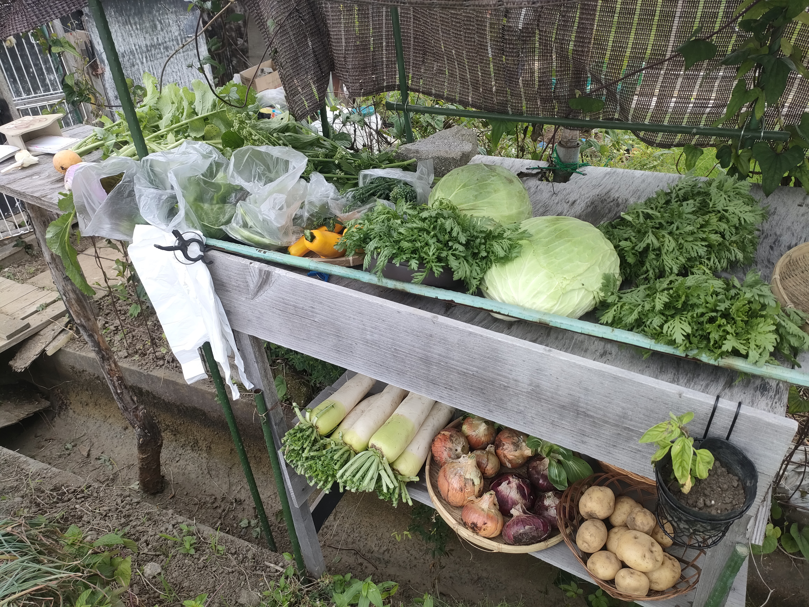

2026年7月号
おさんぽマルシェ新聞
値段が昭和な直売所
畑と食卓が近いからできる価格！ 身近な直売所の価値を少しだけ知ってもらえたら嬉しいだよ。
ピックアップ
昭和の商いは、どこまで続けられるか？
いつも辺鄙な直売所に来ていただきありがとうございます。
最近の物価高、日本の円安もあり、食品も野菜も、資材も・・・
なにからなにまで、高くなるのが当たり前の時代になってきました。
昭和の時代から、スーパーやコンビニができはじめ
綺麗に並んだ野菜がいつでも買えるのが当たり前になってきた昨今ですが
その便利さの中で、野菜がどこでどう育ち収穫されて、運んできてくれたものか？
そういう食べ物の背景は、少しずつ、そして確実に見えにくくなってきてもいます。
おさんぽマルシェの野菜は、朝採れたばかりの無農薬栽培。
畑から直売所まで運ぶのも、ほんのすぐそこです。
それでも、スーパーより安い価格で並んでいる野菜もあります。
今月のピックアップ写真
天狗茄子が20cm 超えてきました。
1 / 6